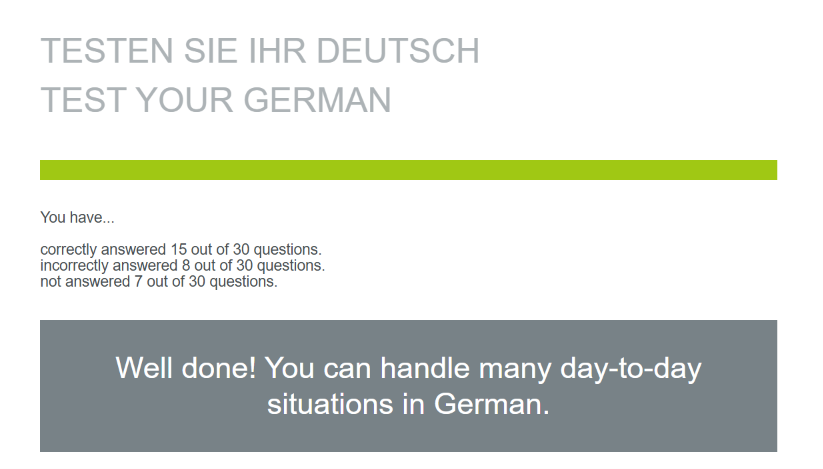

On this first day, I simply took a placement test on Goethe-Institut to find out my current, approximate German level. I mainly used context clues and filled in some blanks that I didn't know, so I think the score given might be a bit presumptous / due to luck. To see what I have learned up to this point, see the My Journey page.